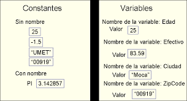

| Resolución de Problemas y Pseudocódigo |
|---|
| Planteamiento y Resolución de Problemas |
|---|
 |
Pseudocódigo: se utiliza para describir la secuencia lógica de pasos necesarios para resolver un problema sin preocuparse por la sintaxis específica de un lenguaje de programación en particular.
El planteamiento y resolución de problemas en pseudocódigo sigue una estructura similar a la programación estructurada, que incluye estructuras de control como secuencias, bucles y condicionales. El objetivo es representar la lógica de solución de manera clara y comprensible, facilitando su implementación posterior en un lenguaje de programación real. |
| Algoritmos y Diagramas |
|---|
| Los algoritmos y diagramas en pseudocódigo son herramientas utilizadas en la programación para describir y representar la secuencia lógica de pasos necesarios para resolver un problema.
Un algoritmo en pseudocódigo: Es una serie de instrucciones paso a paso que describen cómo se debe resolver un problema. Estas instrucciones pueden incluir operaciones aritméticas, comparaciones lógicas, bucles, condicionales y otras estructuras de control. Los algoritmos en pseudocódigo suelen estar escritos en un formato que es fácil de entender y seguir, lo que facilita su implementación posterior en un lenguaje de programación real. Los diagramas en pseudocódigo: Estos diagramas utilizan símbolos y flechas para mostrar la secuencia de pasos y las decisiones que se toman durante la ejecución del algoritmo. Cada símbolo representa una acción o una estructura de control, como una operación aritmética, una condición, un bucle o una llamada a una función. Los diagramas de flujo son especialmente útiles para visualizar y comunicar la lógica de un algoritmo de manera clara y concisa. |  |
| Tipos de Operadores |
|---|
| En pseudocódigo, se utilizan diferentes tipos de operadores para realizar operaciones aritméticas, comparaciones lógicas y asignaciones de valores. A continuación, se describen los tipos de operadores más comunes utilizados en pseudocódigo: |
| Constantes, variables, tipos de instrucciones |
|---|
|  |
En programación, se utilizan constantes, variables y diferentes tipos de instrucciones para manipular datos y controlar el flujo del programa. A continuación, se describen brevemente cada uno de estos elementos:
Constantes: Las constantes son valores fijos que no cambian durante la ejecución del programa. Se utilizan para representar valores específicos, como números, caracteres o cadenas de texto. Las constantes pueden ser numéricas (por ejemplo, 10, 3.14), caracteres (por ejemplo, 'A', '$') o cadenas de texto (por ejemplo, "Hola, mundo"). Las constantes se definen y se les asigna un valor en el código fuente del programa. Variables: Las variables son espacios de memoria que se utilizan para almacenar y manipular datos en un programa. A diferencia de las constantes, el valor de una variable puede cambiar durante la ejecución del programa. Las variables se definen mediante un nombre y un tipo de dato, y se les asigna un valor inicial. Los tipos de datos pueden ser enteros, números de punto flotante, caracteres, cadenas de texto, booleanos, entre otros. El valor de una variable se puede modificar a lo largo del programa mediante asignaciones o mediante operaciones aritméticas o lógicas. |
|
Tipos de instrucciones:
Las instrucciones son comandos o acciones que indican al programa qué hacer. Existen diferentes tipos de instrucciones que permiten controlar el flujo del programa, realizar operaciones aritméticas o lógicas, interactuar con el usuario, entre otras tareas. Algunos ejemplos de tipos de instrucciones son:
- Instrucciones de asignación: Asignan un valor a una variable. - Instrucciones condicionales: Permiten ejecutar un bloque de código si se cumple una condición específica. - Instrucciones de bucle: Repiten un bloque de código varias veces hasta que se cumpla una condición o se alcance un número determinado de repeticiones. - Instrucciones de entrada/salida: Permiten interactuar con el usuario, leer o mostrar datos en la consola, leer o escribir en archivos, etc. - Instrucciones de llamada a funciones: Llaman a una función definida en el programa para ejecutar un conjunto de instrucciones específicas. |  |